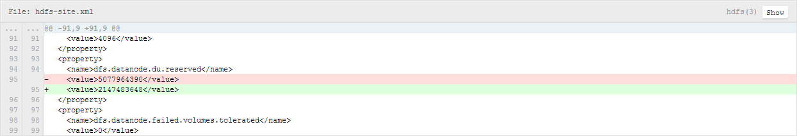
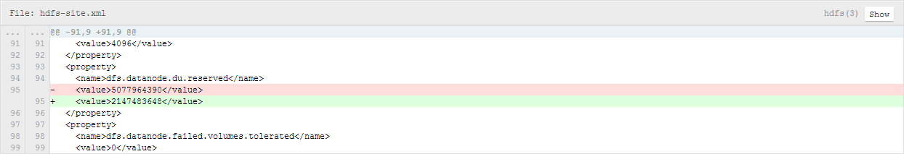
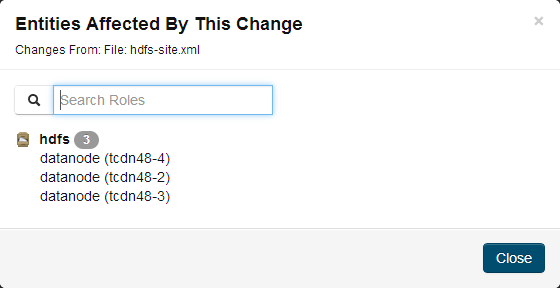
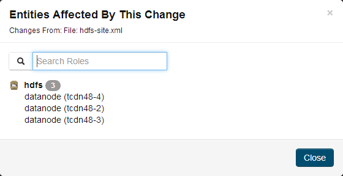
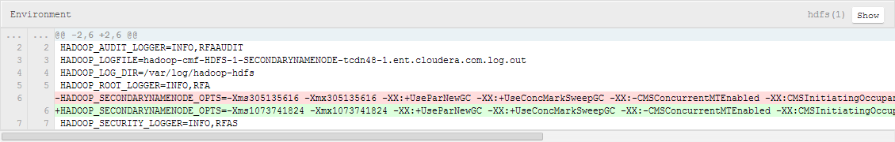

Stale Configurations
The Stale Configurations page provides differential views of changes made in a
cluster. For any configuration change, the page contains entries of all
affected attributes. For example, the following File entry shows the
change to the file

hdfs-site.xml when you update the
property controlling how much disk space is reserved for non-HDFS use on
each DataNode:
To display the entities affected by a change, click the Show
button at the right of the entry. The following dialog box shows that
three DataNodes were affected by the disk space change:


Viewing Stale Configurations
To view stale configurations, click the ,
,
 , or
, or
 indicator next to a service on the
Cloudera Manager Admin Console Home Page
or on a service status page.
indicator next to a service on the
Cloudera Manager Admin Console Home Page
or on a service status page.
Attribute Categories
The categories of attributes include:- Environment - represents environment variables set for the role. For
example, the following entry shows the change to the environment that
occurs when you update the heap memory configuration of the
SecondaryNameNode.
 - Files - represents configuration files used by the role.
- Process User & Group - represents the user and group for the role. Every role type has a configuration to specify the user/group for the process. If you change a value for a user or group on any service's configuration page it will appear in the Stale Configurations page.
- System Resources - represents system resources allocated for the role, including ports, directories, and cgroup limits. For example, a change to the port of role instance will appear in the System Resources category.
- Client Configs Metadata - represents client configurations.
Filtering Stale Configurations
You filter the entries on the Stale Configurations page by selecting from one of
the drop-down lists:
- Attribute - you can filter by an attribute category such as All Files or
by a specific file such as
topology.maporyarn-site.xml. - Service
- Role
After you make a selection, both the page and the drop-down show only entries that match that selection.
To reset the view, click Remove Filter or select All XXX, where XXX is Files, Services, or Roles, from the drop-down. For example, to see all the files, select All Files.
Stale Configuration Actions
The Stale Configurations page displays action buttons. The action depends on what is required to bring the entire cluster's configuration up to date. If you go to the page by clicking a (Refresh Needed) indicator, the action button will
say Restart Stale Services if one of the roles listed on the
page need to be restarted. - Refresh Stale Services - Refreshes stale services.
- Restart Stale Services - Restarts stale services.
- Restart Cloudera Management Service - Runs the restart Cloudera Management Service action.
- Deploy Client Configuration - Runs the cluster deploy client configurations action.